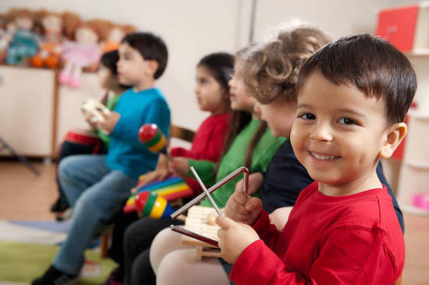
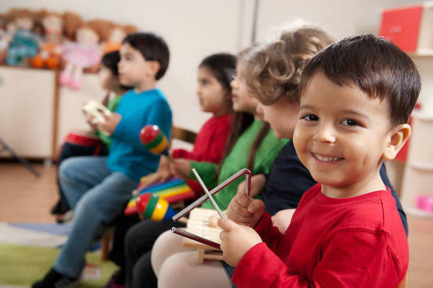

85% взрослых ошибаются в оценке способностей детей
В результате Ваш ребенок развивает то, что нравится Вам, а не ему
На основе анализа ритмов головного мозга точно определяем склонность ребенка к математике, музыке, языкам,
спорту и творчеству. Вы также узнаете тип мышления Вашего ребенка — аналитический или образный
В каких занятиях возможен выдающийся результат, а какие стоит оставить только для гармоничного развития?
Как определить, когда нежелание ребенка — это предел, а когда — рубеж?
Индивидульно и точное сопоставляем потенциал развития способностей каждому из видов занятий, кружков и секций.
Неусидчивость и невнимательность — результат особенностей работы памяти.
Каждому ребенку нужен индивидуальный подход в планировании занятий.
Измеряем внимание и память по каждой области занятий и предлагаем оптимальный режим нагрузок для
лучшего результата.
Нужен ребенку садик или нет? Какой размер группы идеальный? Какой спорт подходит?
Решение зависит от эмоционального интеллекта.
Оцениваем потенциал навыков вести за собой и уверенности себе. Рекомендуем виды спорта, комфортную роль
в коллективе.
Школа России, Школа XXI век или Эльконина-Давыдова?..
Правильный выбор начальной школы или класса определит успешность ребенка и его дальнейшее развитие.
Но как определить способности к занятиям, которых у ребенка еще никогда не было?
Сопоставим способности ребенка с требованиями каждого школьного предмета. Наглядная подсказка для
родителей и педагогов.
В чем причина сложностей общения ребенка со сверстниками и взрослыми? Оптимальный размер класса и секции?
Ответ зависит от эмоционального интеллекта
Оцениваем потенциал навыков понимать эмоции окружающих людей, избегать конфликтов и манипулировать ими.
Рекомендуем виды спорта, комфортную роль в коллективе.
Успех во взрослой жизни зависит от личных качеств не меньше, чем от знаний и умений
На какие сильные стороны сделать упор в развитии?
Определим 11 ключевых личных качеств ребенка: системность мышления, управление людьми и другие по Атласу
«Будущих профессий»
В чем причина успеха или сложностей ребенка при общении со сверстниками?
Индивидуалист он или лидер?
Оцениваем потенциал навыков понимать эмоции окружающих людей, организовывать и манипулировать ими.
Рекомендуем комфортную роль в коллективе.
65% сегодняшних школьников будут работать по специальностям, которые еще не существуют
Прошлый опыт родителей не помогает ориентироваться.в стремительно меняющемся мире
Проведем анализ 25 традиционных и перспективных отраслей и укажем в каждой на самые подходящие профессии.
Альфа-лидер или ведомый? Директор или наставник?
На какую роль в коллективе Вы можете претендовать и каких ситуаций стоит избегать
Оцениваем потенциал навыков понимать эмоции окружающих людей, организовывать и манипулировать ими.
Рекомендуем комфортную роль в коллективе.
Начинать все с начала — не безумие
Безумие — продолжать жить прежней жизнью, зная, что она не приносит ничего, кроме усталости и разочарования.
Узнай в чем твое призвание и действуй, пока не поздно
По ритмам головного мозга точно определим Ваш природный талант и покажем те виды деятельности,
в которых сможете добиться успехов с удовольствием
Нужен ребенку садик или нет?
Какой размер группы идеальный? Как помочь ребенку в начале развития навыков социализации?
Оцениваем потенциал навыков уверенности в себе и понимания окружающих. Рекомендуем виды спорта,
комфортную роль в коллективе.

 
